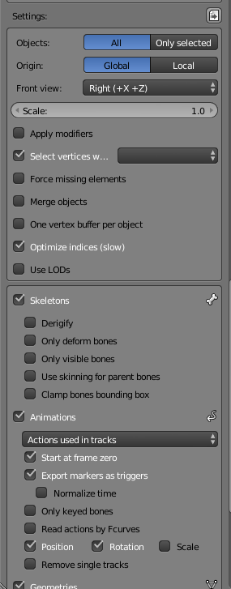

DainTorson
So, I’m trying to export animation from Blender with this plugin:
https://github.com/reattiva/Urho3D-Blender
However, during exporting process I have the “Object has no animation to export error” and .ani file is not being generated.
The settings I’m using:

The model I’m trying to export:
https://drive.google.com/open?id=0B1_Bnxyx1nNfd1lmUU1FelBuSW8
Any help will be useful.